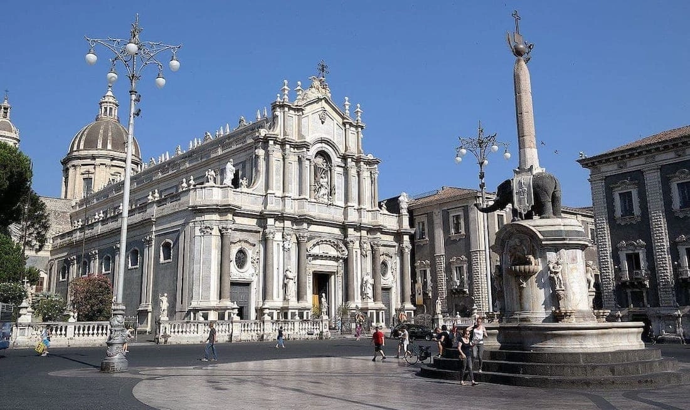
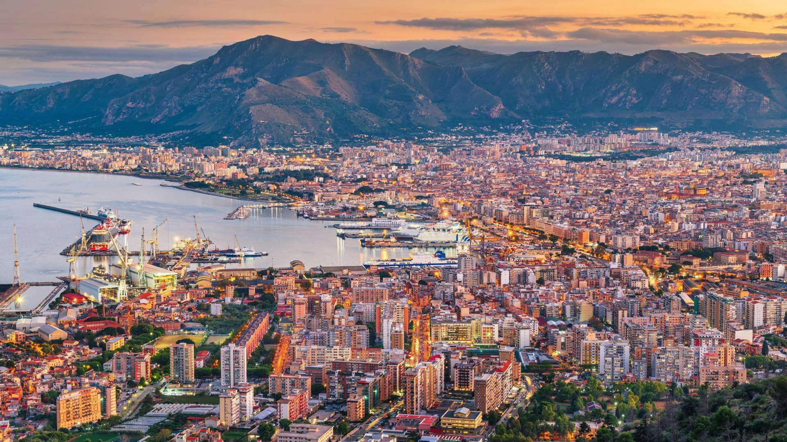

Catania


Posta al centro del mar Mediterraneo, la Sicilia è detta anche isola del Sole. Palermo, sua capitale, è una città millenaria che fonde culture arabe, normanne, spagnole e barocche in un intreccio unico al mondo, visibile in ogni angolo del suo centro storico.
La Piana della Cattedrale è il cuore monumentale di Palermo, uno spazio urbano dominato dalla maestosa Cattedrale e dal Palazzo dei Normanni. È il luogo dove la storia normanna e araba della città si manifesta con maggiore intensità, circondato da palazzi, chiese e vicoli caratteristici.

Un capolavoro architettonico che racconta la complessa storia dell'isola, fondendo stili arabo-normanni, gotici, barocchi e neoclassici. Custodisce le tombe imperiali e reali, tra cui quella di Federico II, e un prezioso tesoro sacro.
Via Vittorio Emanuele, 90134 Palermo PA
La più antica residenza reale d'Europa, un tempo centro del potere dei sovrani di Sicilia. Al suo interno si trova la Cappella Palatina, celebre in tutto il mondo per i suoi sfolgoranti mosaici bizantini.
Piazza del Parlamento, 1, 90134 Palermo PA


Il mercato storico più antico e verace di Palermo. Un labirinto di vicoli dove i colori dei prodotti freschi e le caratteristiche grida dei venditori ('abbanniate') accompagnano la scoperta del miglior street food locale.
Via Ballarò / Piazza Carmine, 90134 Palermo PA
Storica sala cinematografica palermitana situata nel cuore della città. È un punto di riferimento per il cinema d'essai, offrendo una programmazione ricercata che include film in lingua originale, documentari e rassegne d'autore.
Piazza Verdi, 8, 90138 Palermo PA